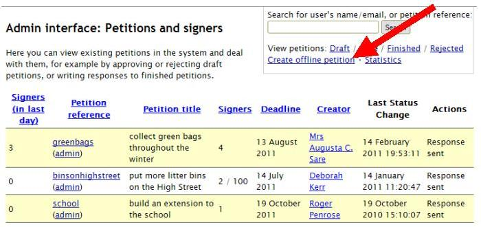
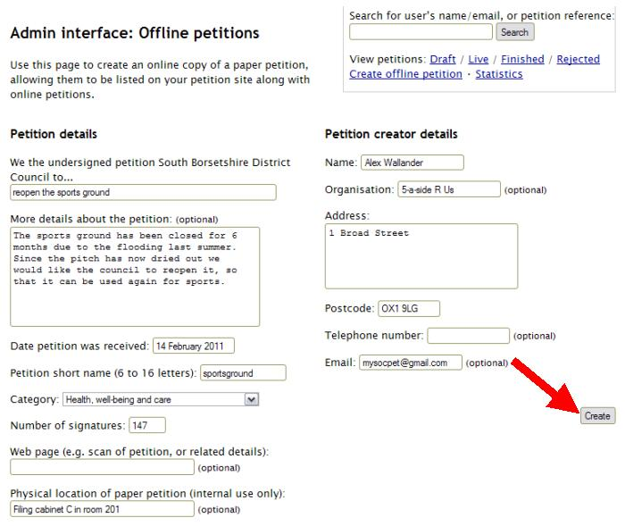

To create an offline petition
You may wish to use the petitions site as an online repository for details of completed paper petitions that have been handed in to the council. You can log these as ‘offline petitions’ in the admin interface.
Members of the public cannot create or sign offline petitions – they are treated as finished petitions.
If the creator of an online petition is also collecting signatures on paper, then you can add the total number of offline signatures to their online petition.
To create an offline petition click the ‘Create offline petition’ link:
Enter the details of the offline petition and the number of signatures, and then click the ‘Create’ button:
The petition will then be listed in the Finished list of petitions in both the admin interface and the public website.
You can also write a response to an offline petition (which will be listed on the website, and emailed to the petition creator if they supplied an email address), and update the number of signatures.